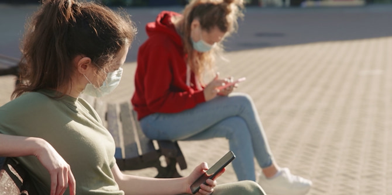

משבר הקורונה – משבר בריאותי וכלכלי גלובלי – הגיע לישראל בתחילת פברואר 2020. המשבר הוא אירוע כמעט "מטפיזי", ששינה סדרי עולם: מערכות בריאות בעולם קרסו, חולים ונפטרים, אנשים שהו בבידוד למעלה מחודשיים, למעלה ממיליון מפוטרים בישראל וכלכלה שעמדה מלכת, אי-ודאות עצומה ביחס לכל תחומי החיים, חששות. המשבר ייחודי ושונה מכל מה שהכרנו.
מהרגע שבו ממשלת ישראל החלה להדק את ההגבלות על הפעילות האזרחית, עד למצב של סגר מלא, נדרשו כלל המערכות לארגן את עצמן מחדש בתוך זמן קצר מאוד ולמצוא דרכים חדשות ויצירתיות להיות רלוונטיות, פרודוקטיביות ובעלות משמעות.
היות שמערכת החינוך הושבתה באופן מלא, לרבות מערכות החינוך הבלתי פורמלי, נכנסו הילדים והנוער בישראל לבידוד חינוכי וחברתי. הם מצאו את עצמם עם משפחתם, בביתם, ללא פעילות חינוכית חיצונית משמעותית, רחוקים מחבריהם ורחוקים ממבוגר משמעותי שיכול ללוות אותם.
במהירות רבה ובהמון יוזמה ויצירתיות מצאו אנשי החינוך הבלתי פורמלי את הדרכים להגיע לקשר מתמשך ומשמעותי עם הילדים – חניכים ושאינם.

מכון מנדל למנהיגות, באמצעות תוכנית מנדל למנהיגות נוער, החליט לחקור ולתעד בזמן אמת את הרגע הזה –הרגע שבו אולי התהוותה פדגוגיה חדשה, הרגע שבו כנגד כל הסיכויים נוצרו יוזמות חינוך מלהיבות, הרגע שבו הזהות, המחויבות והגעגוע התגברו על מחסומי הבידוד והמרחק והמשיכו להניע את גלגלי החינוך.
מסמך זה אינו מחקר מדעי או אקדמי. זהו תיעוד, ניסיון לאסוף את הרגע, לשמוע הרבה קולות ולעגן במסמך אחד עדכני תיאור מצב בזמן אמת – מה קרה בחינוך הבלתי פורמלי בזמן משבר הקורונה.
סקירה זו נכתבה "תוך כדי תנועה". מטרתה למפות ולקטלג את מעני החינוך הבלתי הפורמלי באמצעים מקוונים ובתנאי אי-ודאות והבנה מהירה בזמן אמת לגבי הפעילות הנעשית בשטח: אופי הפעילות והיקפה, מידת יעילותה, הלקחים העולים ממנה, התשתיות הנדרשות ומחשבות לגבי העתיד. מטרות הסקירה הן להוות פלטפורמה ליישום עתידי במצבי משבר, כך שתשמש כלי עזר לגופי החינוך, הנחת יסודות לקראת מחקרים עתידיים על המתודות, הפדגוגיה והדרכים החדשות לעשיית חינוך, וכן בחינת ההשפעות והתוצאות של התקופה המוזרה והייחודית הזאת, שבה נכפה עלינו בידוד חברתי.
הסקירה, ביוזמת
יעל הס, מנהלת מכון מנדל למנהיגות, ומיקי נבו, מנהל תוכנית מנדל למנהיגות נוער דאז וכיום מנהל מרכז מנדל למנהיגות בצפון, נכתבה על-ידי
דני רוזנר, כיום מנהל תוכנית מנדל למנהיגות נוער, בסיוע
אלה אביטל ובליווי אקדמי וניתוח סטטיסטי של
ד"ר רונית עמית.

{kind=link}